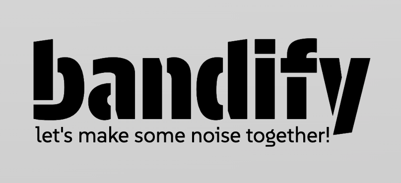
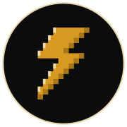

Hello, I'm
Jefferson
a Software Developer
I'm a motivated Junior Software Developer from Brazil, recently graduated as an IT-Specialist in Software Development in Germany. Currently, I'm following a self-organized learning plan to improve my knowledge in Java and JavaScript, as well as key concepts such as API design, object-oriented programming and SOLID principles.
This Portfolio presents my projects and ideas with the goal of learning, improving and sharing with others.
— Feel free to explore or get in touch by scrolling down!
projects
bandify
Application

This project was developed as part of the final requirements for my graduation as a Software Developer. Together with two students and friends, we built this application.
The idea was to create a social network for musicians, giving them the ability to create a profile in the app and the opportunity to connect with others who share similar interests and form bands or music groups.
Used technologies for this project:
HTML
CSS
PHP
MySQL
Docker
Git
ticketShare
Application
I started this project while doing my appreticeship in 2022. The goal was to apply what I was learning at vocational school and at the company where I was working.
The idea was to create an application where passengers could offer the remaining seats of a group train ticket to other passengers during a ride. Users should also be able to search for existing ride offers.
Used technologies for this project:
HTML
CSS
PHP
MariaDB
Docker
Git
Portfolio v2.0
Website

This portfolio was created as a single-page website to present my projects and ideas with the goal of learning, improving and sharing with others.
For this project I wanted to use the Gruvbox color palette and also incorporate some pixel art details.
It was built entirely using HTML and CSS, with the exception of message submissions through the contact form, which are handled on the backend using Node.js. The code is hosted on GitHub and deployed via Vercel.
Used technologies for this project:
HTML
CSS
Node.js
Git
Portfolio v1.0
Website
As my first portfolio and second website, I wanted to keep it simple while also adding some interactive elements using JavaScript.
My plan was to create a space where I could document and showcase my personal projects and also learn with the process.
While designing it, I came up with the idea of building three different sections: 'hello', 'projects' and 'contact', and each displayed as a separate tab. This structure gives the interesting impression of a single-page layout.
Used technologies for this project:
HTML
CSS
JavaScript
Git
Mila
Website
This project is my first single-page website. I created it to put into practice what I had learned about HTML, CSS and Git, and also to help me build a basic foundation in how websites are constructed.
This website was made in 2022 for my sister's small business, which sells homemade chocolate candies in Brazil.
Even though it's a very simple project, working on it helped me a lot to understand website structure and to learn how to design user-friendly interfaces.
Used technologies for this project:
HTML
CSS
Git
contact
— Feel free to contact me by submitting the form below —
…or send me an email directly on jefferson.ferraz@live.com.